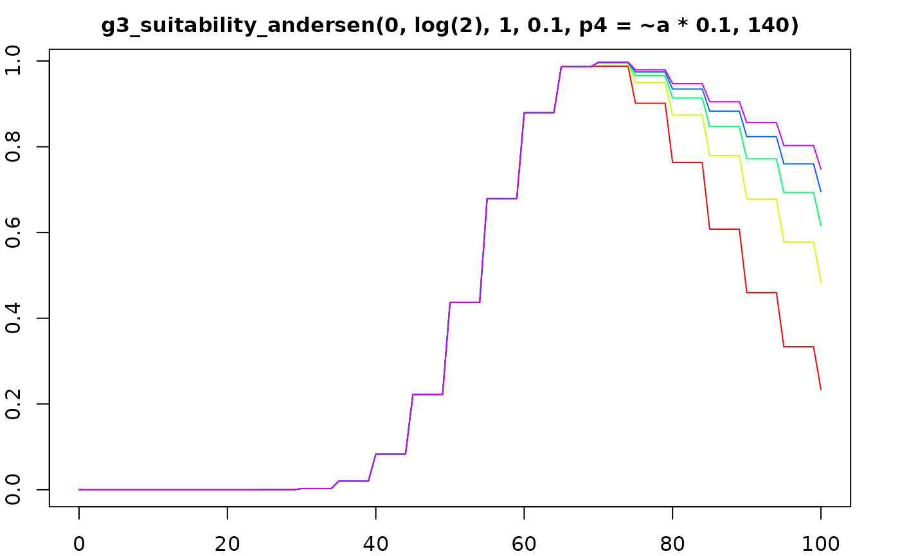
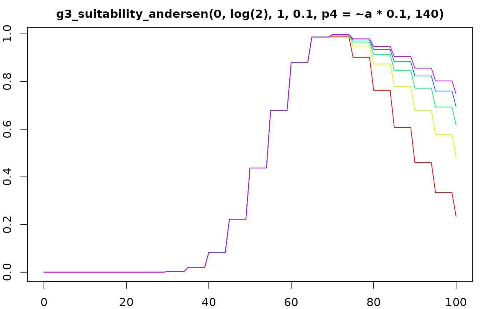
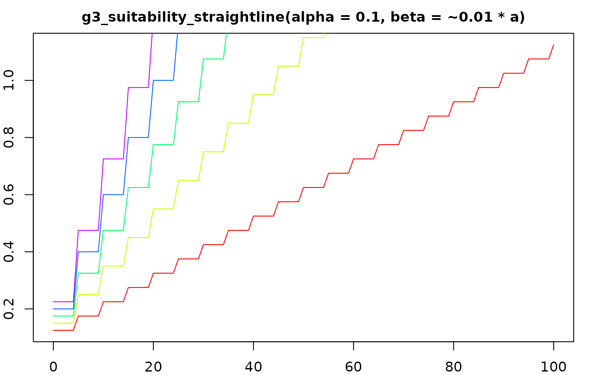
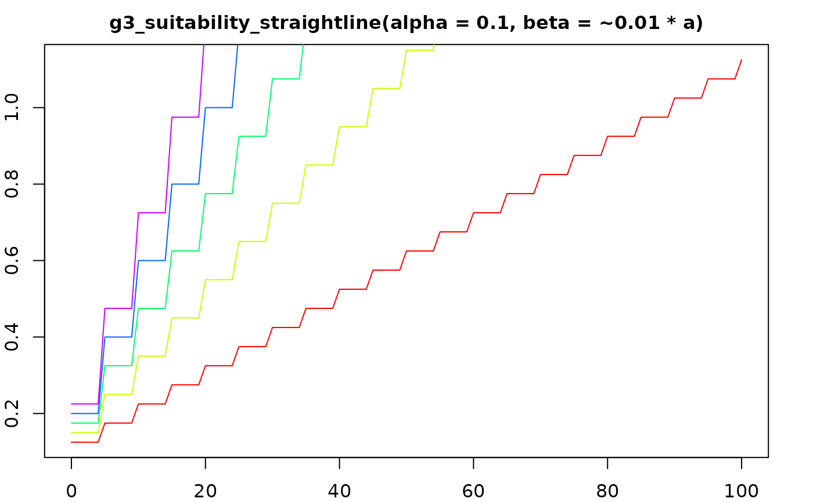

Gadget3 suitability formulae
suitability.RdFormula-returning functions describing length suitability relationships.
Usage
g3_suitability_exponentiall50(
alpha = g3_parameterized("alpha", by_stock = by_stock, by_predator = by_predator),
l50 = g3_parameterized("l50", by_stock = by_stock, by_predator = by_predator),
by_stock = TRUE,
by_predator = TRUE)
g3_suitability_andersen(p0, p1, p2, p3 = p4, p4, p5 = quote( predator_length ))
g3_suitability_andersenfleet(
p0 = g3_parameterized('andersen.p0', value = 0, optimise = FALSE,
by_stock = by_stock),
p1 = g3_parameterized('andersen.p1', value = log(2),
by_stock = by_stock, by_predator = by_predator),
p2 = g3_parameterized('andersen.p2', value = 1, optimise = FALSE,
by_stock = by_stock),
p3 = g3_parameterized('andersen.p3', value = 0.1, exponentiate = exponentiate,
by_stock = by_stock, by_predator = by_predator),
p4 = g3_parameterized('andersen.p4', value = 0.1, exponentiate = exponentiate,
by_stock = by_stock, by_predator = by_predator),
p5 = quote( stock__maxmidlen ),
by_stock = TRUE,
by_predator = TRUE,
exponentiate = TRUE)
g3_suitability_gamma(alpha, beta, gamma)
g3_suitability_exponential(alpha, beta, gamma, delta)
g3_suitability_straightline(alpha, beta)
g3_suitability_constant(alpha)
g3_suitability_richards(p0, p1, p2, p3, p4)Arguments
- alpha,beta,gamma,delta,l50,p0,p1,p2,p3,p4,p5
formula substituted into calcuations, see below.
- by_stock
Change the default parameterisation (e.g. to be by 'species'), passed through to default calls to
g3_parameterized.- by_predator
Change the default parameterisation (e.g. to be by 'fleet'), passed through to default calls to
g3_parameterized.- exponentiate
Exponentiate parameters,passed through to default calls to
g3_parameterized.
Details
When using these to describe a predator/prey relationship, the stock midlength \(l\) will refer to the prey midlength.
Value
All functions return a formula for use in g3a_predate_fleet's suitabilities argument:
g3_suitability_exponentiall50
A logarithmic dependence on the length of the prey as given by the following equation (note that the prey length dependence is actually dependant on the difference between the length of the prey and \(l_{50}\)):
$$ \frac{1}{ 1 + e^{-\alpha (l - l_{50})} } $$
- \(l\)
Vector of stock midlength for each lengthgroup
- \(l_{50}\)
Length of the stock with a 50% probability of predation, from parameter l50
g3_suitability_andersen
This is a more general suitability function that is dependant on the ratio of the predator length to the prey length as given by the following equation:
If \(p_3 = p_4\): $$ p_0 + p_2 e^{-\frac{(x - p_1)^2}{p_4}} $$
Otherwise:
$$ p_0 + p_2 e^{-\frac{(x - p_1)^2}{p_4}} * \min(\max(p_1 - x, 0), 1) + p_2 e^{-\frac{(x - p_1)^2}{p_3}} * \min(\max(x, 0), 1) $$ ...i.e if \(\log\frac{L}{l} <= p_1\) then \(p_3\) used in place of \(p_4\).
- \(x\)
\(\log\frac{p_5}{l}\)
- \(L\)
Vector of predator midlength for each lengthgroup
- \(l\)
Vector of stock midlength for each lengthgroup
- \(p_0\) .. \(p_4\)
Function parameter p0 .. p4
- \(p_5\)
Function parameter p5, if unspecified uses \(L\), Vector of predator midlength for each lengthgroup.
NB: Specifying \(p_5\) is equivalent to using the andersenfleet function in gadget2.
g3_suitability_andersenfleet
A simplified version of g3_suitability_andersen, suitable for predation by fleets,
as the defaults do not rely on the predator's length.
g3_suitability_gamma
This is a suitability function that is more suitable for use when considering the predation by a fleet, where the parameter \(\gamma\) would represent the size of the mesh used by the fleet (specified in centimetres).
$$ (\frac{l}{(\alpha - 1)\beta\gamma}) ^ {(\alpha - 1) e^{\alpha - 1 - \frac{l}{\beta\gamma}}} $$
- \(l\)
Vector of stock midlength for each lengthgroup
- \(\alpha\)
Function parameter alpha
- \(\beta\)
Function parameter beta
- \(\gamma\)
Function parameter gamma
This is a suitability function that is more suitable for use when considering the predation by a fleet, where the parameter \(\gamma\) would represent the size of the mesh used by the fleet (specified in centimetres).
g3_suitability_exponential
This is a suitability function that has a logarithmic dependence on both the length of the predator and the length of the prey as given by the following equation:
$$ \frac{\delta}{1 + e^{-\alpha - \beta l - \gamma L}} $$
- \(L\)
Vector of predator midlength for each lengthgroup
- \(l\)
Vector of stock midlength for each lengthgroup
- \(\alpha\)
Function parameter alpha
- \(\beta\)
Function parameter beta
- \(\gamma\)
Function parameter gamma
- \(\delta\)
Function parameter delta
g3_suitability_straightline
Returns a formula for use in predation function's suitabilities argument:
$$ \alpha + \beta l $$
- \(l\)
Vector of stock midlength for each lengthgroup
- \(\alpha\)
Function parameter alpha
- \(\beta\)
Function parameter beta
g3_suitability_constant
Returns a formula for use in predation function's suitabilities argument:
$$ \alpha $$
- \(\alpha\)
Function parameter alpha
g3_suitability_richards
Returns a formula for use in predation function's suitabilities argument:
$$ {\big( \frac{p_3}{1 + e^{-p_0 - p_1 l - p_2 L}} \big)}^{\frac{1}{p_4}} $$
- \(L\)
Vector of predator midlength for each lengthgroup
- \(l\)
Vector of stock midlength for each lengthgroup
- \(p_0\) .. \(p_4\)
Function parameter p0 .. p4
This is an extension to g3_suitability_exponential.
Examples
ling_imm <- g3_stock(c(species = 'ling', 'imm'), seq(20, 156, 4)) %>% g3s_age(3, 10)
ling_mat <- g3_stock(c(species = 'ling', 'mat'), seq(20, 156, 4)) %>% g3s_age(5, 15)
igfs <- g3_fleet('igfs')
igfs_landings <-
structure(expand.grid(year=1990:1994, step=2, area=1, total_weight=1),
area_group = list(`1` = 1))
# Generate a fleet predation action using g3_suitability_exponentiall50
predate_action <- g3a_predate_fleet(
igfs,
list(ling_imm, ling_mat),
suitabilities = list(
ling_imm = g3_suitability_exponentiall50(
g3_parameterized('lln.alpha', by_stock = 'species'),
g3_parameterized('lln.l50', by_stock = 'species')),
ling_mat = g3_suitability_exponentiall50(
g3_parameterized('lln.alpha', by_stock = 'species'),
g3_parameterized('lln.l50', by_stock = 'species'))),
catchability = g3a_predate_catchability_totalfleet(
g3_timeareadata('igfs_landings', igfs_landings)))
# You can use g3_eval to directly calculate values for a stock:
g3_eval(
g3_suitability_exponentiall50(alpha = 0.2, l50 = 60),
stock = g3_stock('x', seq(0, 100, 10)) )
#> 0:10 10:20 20:30 30:40 40:50 50:60
#> 1.670142e-05 1.233946e-04 9.110512e-04 6.692851e-03 4.742587e-02 2.689414e-01
#> 60:70 70:80 80:90 90:100 100:Inf
#> 7.310586e-01 9.525741e-01 9.933071e-01 9.990889e-01 9.998766e-01
#> attr(,"class")
#> [1] "force_vector" "numeric"
## Plots
suit_plot <- function (
fn,
stock = g3_stock('x', seq(0, 100, 10)),
predator_length = 140 ) {
cols <- rainbow(5)
par(mar = c(2,2,2,2), cex.main = 1)
plot(
g3_stock_def(stock, 'midlen'),
seq(0, 1, length.out = length(g3_stock_def(stock, 'midlen'))),
main=deparse1(body(fn)),
type = "n")
for (a in seq_along(cols)) lines(
g3_stock_def(stock, 'midlen'),
g3_eval(fn(a), stock = stock, predator_length = predator_length),
type = "o", col = cols[[a]] )
}
suit_plot(function (a) g3_suitability_exponentiall50(alpha = a * 0.1, l50 = 50))
 suit_plot(function (a) g3_suitability_andersen(0, log(2), 1, p3 = a * 0.1, 0.1, 140))
suit_plot(function (a) g3_suitability_andersen(0, log(2), 1, p3 = a * 0.1, 0.1, 140))
 suit_plot(function (a) g3_suitability_andersen(0, log(2), 1, 0.1, p4 = a * 0.1, 140))

suit_plot(function (a) g3_suitability_gamma(alpha = 2 + a * 0.1, beta = 1, gamma = 40))
suit_plot(function (a) g3_suitability_andersen(0, log(2), 1, 0.1, p4 = a * 0.1, 140))

suit_plot(function (a) g3_suitability_gamma(alpha = 2 + a * 0.1, beta = 1, gamma = 40))
 suit_plot(function (a) g3_suitability_exponential(0, 0.01 * a, 0, 1))
suit_plot(function (a) g3_suitability_straightline(alpha = 0.1, beta = 0.01 * a))

suit_plot(function (a) g3_suitability_constant(a * 0.1))
suit_plot(function (a) g3_suitability_exponential(0, 0.01 * a, 0, 1))
suit_plot(function (a) g3_suitability_straightline(alpha = 0.1, beta = 0.01 * a))

suit_plot(function (a) g3_suitability_constant(a * 0.1))
 suit_plot(function (a) g3_suitability_richards(0, 0.05, 0, 1, 0.1 * a))
suit_plot(function (a) g3_suitability_richards(0, 0.05, 0, 1, 0.1 * a))